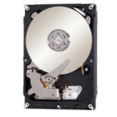
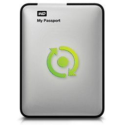
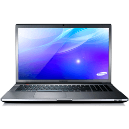
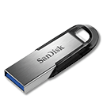
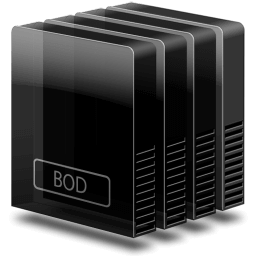
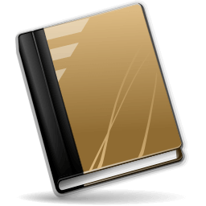

База знаний по восстановлению данных

Восстановление данных с жесткого диска

Восстановление данных с жесткого диска

Восстановление данных с жесткого диска

Восстановление данных с жесткого диска
.jpg)
Восстановление данных с жесткого диска

Восстановление данных с жесткого диска
.png)
Восстановление данных с жесткого диска

Восстановление данных с жесткого диска
Почему для восстановления данных выбирают нас
Storelab — это крупнейшая лаборатория в Москве. Вас обслуживают инженеры, которые знают и любят свою работу. Мы работаем без предоплат. В любое время с радостью ответим на все ваши вопросы. Звоните круглосуточно: +7 (495) 215-00-24.
Как проводится диагностика
Диагностика бесплатная, занимает примерно 10 - 15 минут. Далее специалист расскажет вам неисправность, стоимость и сроки работ по восстановлению данных. Если у вас нет возможности приехать к нам - Закажите бесплатную доставку.
Как к нам проехать
Работаем ежедневно, находимся в минуте ходьбы от метро Китай-город
по адресу Лубянский проезд 15/2, подъезд 4, офис 213 [ Схема проезда ]
Время работы: по будням с 9:00 до 21:00 в выходные с 9:00 до 19:00. Если вы на машине у нас есть бесплатная парковка.